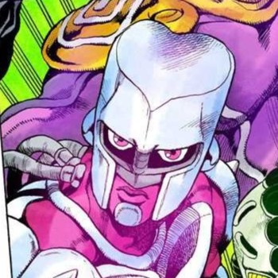
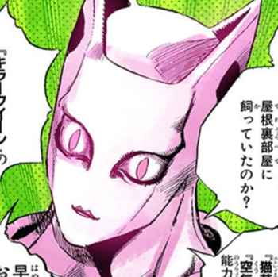
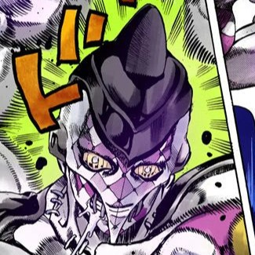
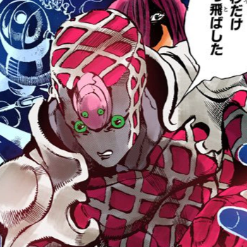
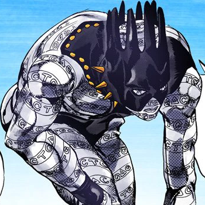
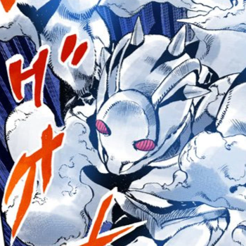
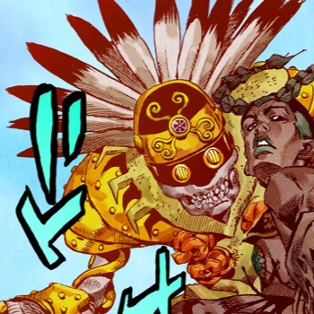
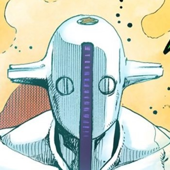

Showing some of my Favorite stands in the series (in no particular order)
1. Crazy Diamond
This Stand has the power of restoration. It can basically revert any object back to a previous state.
When a piece of an object is
taken away from the main body long enough, it'll be considered as its own separate object. The User uses this ability to heal
people and repair objects but he cannot heal himself representing the user's selfless nature.
2. Killer Queen (Part 4)
This stand's ability is to make bombs out of basically anything. The user can trigger the explosion whenever they want.
This is shown by pressing a button on the right hand of their stand. The User can also choose which parts do and don't explode.
It is worth noting that the explosions don't cause damage to their surroundings, is silent and violent reperesenting
the user's want
to be hidden but carry on doing his malicious actions.
(It is specified to be the part 4 version because there is another stand in Part 8 of the same name)
3. Purple Haze
This stand is unstable and wild. Its primary way of attacking is through punching and capsules that can befound on their fists.
These capsules contain a deadly virus that deteriorates anything and anyone it comes
in contact with. It represents
the user's repressed anger that shows itself sometimes, injuring those around him and sometimes himself.
4. King Crimson
This stand is described of having the ability to erase time for up to 10 seconds. Anything that happened within
the erased time is skipped
and everyone will have no memory of what happened but the things that were supposed
to happen still happened. The only exception to the effects
of time-skip is the user and any extension of themselves. During the erased
time, the user can move freely but they can't affect other people directly.
5. White Snake
 This stand has the ability of Disc Extraction. The stand can extract 2 main types of discs, one contains memories
while the other contains the stand of the target. White Snake can insert/extract the discs into/from anyone.
Extracting both discs can cause a person to be in a comatose-like state or die.There seems to be no limit when it comes to
how many discs can be present at once. White Snake is also the only one who can insert discs into others.
White Snake can also create illusions and the stand has a mind of its own.
6. Weather Report
This stand can control the weather and atmosphere. It can summon, control and recreate different weather phenomena.
The stand is mainly shown controlling the air, wind and clouds.
7. In a Silent Way
 This stand can control sound through 2 different means. The first one is known as Sound Storage which allows
the user to store sound and anyone who comes in contact with it will feel the effects (like sizzling or slashing).
The stand can also make 3D constructs that have different effects depending on what sound was used to make it.
8. Soft & Wet
This stand's ability is known as Bubble Generation. The stand can make bubble that the user can control.
The user can carry
himself with bubbles to get on high ground and use the bubbles to protect himself. The stand can also temporarily steal
and store physical attributes and properties like sight or friction in bubbles.The bubbles can also pop with so much power
that it makes a mini-explosion.